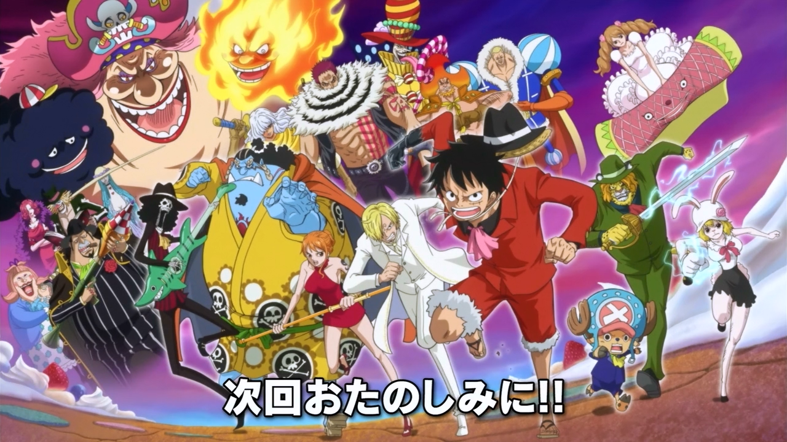

Arc Whole Cake Island

La saga Whole Cake Island est la cinquième saga de la seconde partie de l'histoire de One Piece et commence après que l'équipage de Luffy a quitté l'île de Dressrosa.
L'équipage de Luffy se dirige vers l'île Whole Cake, où se trouve l'Empereur Big Mom, pour récupérer Sanji, qui a été kidnappé par sa famille pour le marier à une princesse de Big Mom.
Sur l'île, l'équipage rencontre de nouveaux personnages comme les membres de la Famille Vinsmoke et Pudding, la fiancée de Sanji. Ils découvrent également les secrets de l'île, notamment la fabrication des "Soul Pocus" qui permettent de voler les âmes des gens, et le fonctionnement du gouvernement de l'Empereur Big Mom.
L'équipage de Luffy doit affronter de nombreux ennemis puissants, tels que les membres de la Famille Charlotte, le commandant de la flotte de Big Mom, Capone Bege, et l'un des trois Sweet Commanders, Katakuri.
La saga culmine avec une bataille épique entre l'équipage de Luffy, les Vinsmoke et Capone Bege contre les forces de Big Mom. Luffy doit faire face à Katakuri dans un combat difficile tandis que Sanji et Pudding tentent de mettre fin au mariage forcé et de sauver la situation.
Finalement, l'équipage parvient à s'échapper de l'île avec l'aide de Capone Bege et à laisser derrière eux une île en proie au chaos. La saga se termine avec une confrontation entre les membres de l'équipage et les Vinsmoke, qui révèle le passé et les véritables intentions de Sanji.